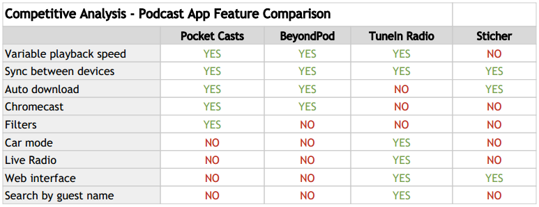
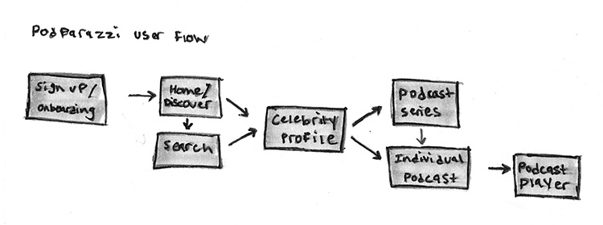

Podparazzi is a podcast app I created for my friend Stephen Kurshner. Podparazzi is unique because its the only mobile app that allows Stephen to easily find and follow the podcast appearances of his favorite celebrities. Using a user centered design process I created a Minimum Viable Product (MVP) that fulfills and caters to Stephen’s individual needs.
When I first met with Stephen my primary goal was to understand his interests, habits and daily routine. By doing so I hoped to uncover an unmet need that I could fulfill. A number of interesting pain points surfaced, but I found Stephen’s desire to follow his favorite comedians’ podcast appearances to be the promising. Thus I decided to make a mobile podcast app called Podparazzi.
Using the information I gathered from my interview with Stephen I created a simple persona hypothesis. I included Stephen’s bio, goals, pain points and habits/interests. I found it crucial to clearly articulate Stephen’s needs so that I was regularly reminded that I was designing for him and not for myself.
I understood Stephen’s desire to follow celebrity podcasts, but I also needed to understand the extent to which this functionality existed in an already crowded podcast marketplace. I selected 4 of the most popular podcast apps and attempted to find and follow Zach Galifianakis podcasts. The results were underwhelming, but validated the Podparazzi concept.
Using the same 4 podcast apps from the task analysis, I conducted a competitive feature analysis. It was important that I became aware of the capabilities of the best podcast apps and how they differentiated themselves from one another.
A hand drawn user flow helped me map out the individual sections of Podparazzi MVP and the ways by which Stephen could move/navigate through them.
I sketched 5 screens that would combine to make the most important components of the initial MVP. I sketched the following pages: landing/sign up, discover, profile, podcast player and search. Sketching each portion of the app helped me visualize the layout and understand how the larger pieces fit together.
Adobe Illustrator high fidelity mockups added more detail to the initial sketches and allowed me to better visualize how the final product would look and feel. A number of elements were removed in the process of transforming the sketches into mockups to make the interface even easer to use.
I transferred the individual high fidelity mockups to InVision to created a basic prototype. Adding simple animations and click events better demonstrated how the app would work especially on an actual mobile device.
View PrototypeI recruited the help of a few of my friends to usability test Podparzzi. I received helpful feedback and incorporated it back in the design of the app.